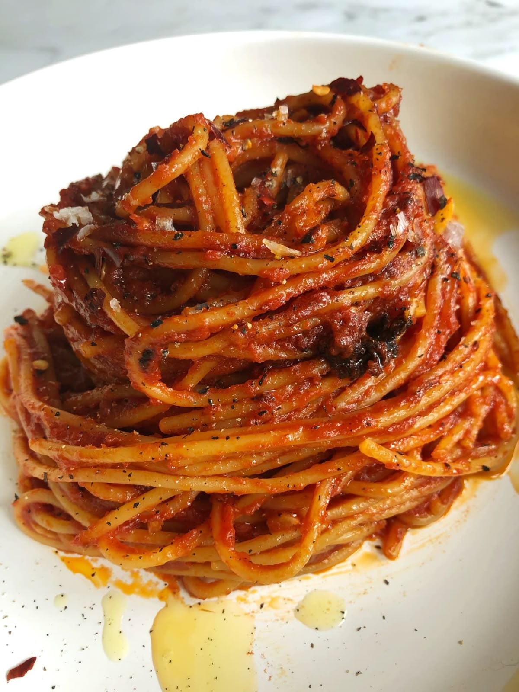

Assassin's Spaghetti
(Spaghetti all'Assassina)

Home
Ingredients
Tomato Broth:
- 1 tablespoon olive oil
- 2 cloves garlic, minced
- 3 cups tomato puree
- 3 cups water
- 1 teaspoon salt, or to taste
Assassin's Spaghetti:
- ¼ cup olive oil
- 2 teaspoons red chili flakes, or to taste
- 6 ounces dry spaghetti
- salt to taste
- 1 tablespoon finely chopped parsley, for garnish
Directions:
- Gather all ingredients.
- Heat olive oil in a pot over medium heat.
Add garlic and sizzle until it starts to turn golden and
fragrant, about 1 minute. Stir in tomato puree, water, and salt.
Bring to a simmer on medium-high. Once simmering, reduce to
low heat and keep warm.
- Pour olive oil into a large non-stick skillet over medium-high heat,
season with chili flakes and heat until chili flakes start to sizzle,
for 1 minute. Add raw spaghetti and toss until well coated with chili oil.
- Pour in about 3 cups of tomato broth and, using tongs, move pasta
from side to side to evenly distribute tomato broth. Cook,
occasionally moving pasta from side to side with tongs, all facing
the same direction, until most of the broth has been absorbed or evaporated,
and the spaghetti starts frying in the pan.
- Turn spaghetti over with tongs, and evenly arrange in the pan.
Keep cooking until the pasta starts to brown, and even lightly chars.
- Add about 2 more cups of tomato broth, and repeat the process.
Continue cooking until the spaghetti is as charred as you like ,
and cooked to your desired doneness. More broth can be added at the
end of the process for a saucier version, as shown in the video,
or it can be served relatively dry.
- Serve with a drizzle of olive oil and more chili flakes if desired.
- Enjoy!